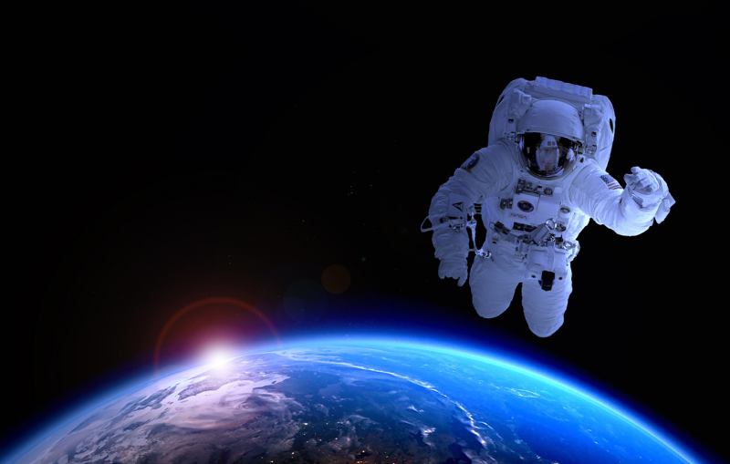
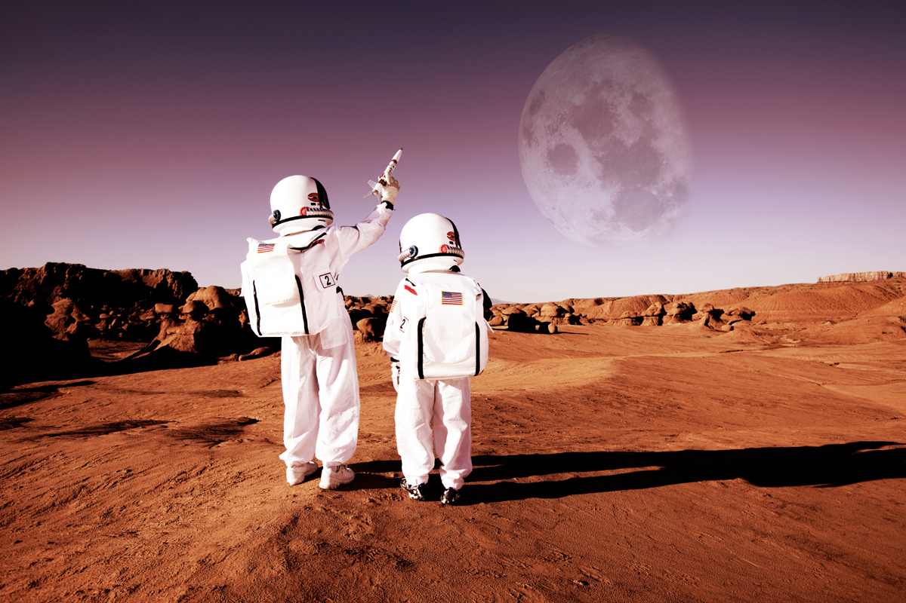

Якщо говорити про фах майбутнього, то це саме він! Багато експертів кажуть, що найближчими роками поїздки на навколоземну орбіту стануть доступнішими і, відповідно, з'явиться попит на таких фахівців у галузі туризму. Вони зможуть супроводжувати групу туристів у космосі, показувати їм сходи сонця, ділитися цікавою інформацією тощо. Для освоєння такої професії потрібне творче мислення, технічні та гуманітарні навички.